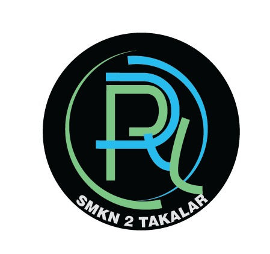
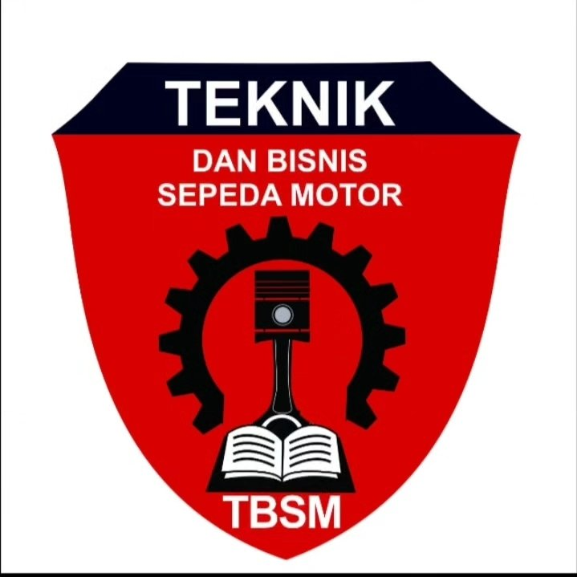

SMKN 2 Takalar adalah sekolah menengah kejuruan negeri yang berfokus pada pendidikan vokasional yang mempersiapkan siswa dengan keterampilan praktis dan kompetensi teknis sesuai kebutuhan dunia industri dan dunia kerja (DUDI).
Program Keahlian (Jurusan)
Teknik Komputer & Jaringan
Mempelajari instalasi jaringan, server, dan perakitan komputer.

Rekayasa Perangkat Lunak
Fokus pada pengembangan aplikasi web, mobile, dan basis data.

Teknik Sepeda Motor
Keterampilan dalam teknis perawatan, perbaikan, dan manajemen bisnis sepeda motor.
Teknik Kendaraan Ringan
Keahlian pada ilmu perawatan, perbaikan, dan pemeliharaan kendaraan roda empat.
Bisnis Retail
Mempelajari aktivitas penjualan barang atau jasa secara langsung kepada konsumen akhir.